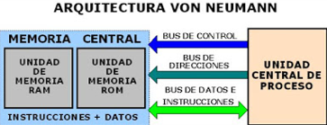
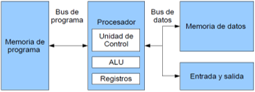

Arquitecturas de computo.
1.1 Modelos de Arquitectura
1.1.1 Clasicas: Modelo Von Neumann
La arquitectura Von Neumann tiene sus orígenes en el trabajo del matemático John Von Neumann desarrollado con John Mauchly y John P. Eckert y divulgado en 1945 en la Moore School de la Universidad de Pensilvania, Estados Unidos, en el que se presentaba e EDVAC ( Electronic Discrete Variable Automatic Computer). De aquí surgió la arquitectura del programa almacena en memoria y búsqueda/ejecución secuencial de instrucciones. En términos generales una computadora tiene que realizar 3 funciones:
Tal que un PC (Personal Computer) debe procesar datos, transformando la información recibida, de igual forma tiene que almacenar datos, como resultado final de estas. También debe de realizar transferencia de datos entre su entorno y el mismo. La arquitectura de un computador hace referencia a la organización de sus elementos en módulos con una funcionabilidad definida y a la iteración entre ellos.
1.1.1 Clasicas: Modelo Harvard
Este modelo, que utilizan los Microcontroladores PIC, tiene la unidad central de proceso (CPU) conectada a dos memorias (una con las instrucciones y otra con los datos) por medio de dos buses diferentes.

Una de las memorias contiene solamente las instrucciones del programa (Memoria de Programa), y la otra sólo
almacena datos (Memoria de Datos).
Ambos buses son totalmente independientes lo que permite que la CPU pueda acceder de forma independiente y
simultánea a la memoria de datos y a la de instrucciones. Como los buses son independientes estos pueden tener
distintos contenidos en la misma dirección y también distinta longitud.Tambien la longitud de los datos y las
instrucciones puede ser distinta, lo que optimiza el uso de la memoria en general.
Para un procesador de Set de Instrucciones Reducido, o RISC (Reduced Instrucción Set Computer), el set de
instrucciones y el bus de memoria de programa pueden diseñarse de tal manera que todas las instrucciones
tengan una sola posición de memoria de programa de longitud.
Además, al ser los buses independientes, la CPU puede acceder a los datos para completar la ejecución de
una instrucción, y al mismo tiempo leer la siguiente instrucción a ejecutar.
1.1.2 Segmentadas
Las arquitecturas segmentadas o con segmentación del cauce, buscan mejorar e desempeño realizando paralelamente
varias etapas del ciclo de instrucción al mismo tiempo.
El procesador se divide en varias unidades funcionales independientes y se dividen entre ellas el procesamiento
de las instrucciones.
Otra aportación frecuente que aumenta el rendimiento del computador es el fomento del paralelismo implícito,
que consiste en la segmentación del procesador (pipe-line), descomponiéndolo en etapas para poder procesar
una instrucción diferente en cada una de ellas y trabajar con varias a la vez.
En la informática, el pipeline se emplea en microprocesadores, tarjetas gráficas y software. Los cálculos que se
realizan en el proceso de programación deben sincronizarse con un reloj para evitar los tramos más recargados que
se detectan entre dos registros.
Segmentar los cálculos, por lo tanto, permite mejorar la frecuencia de trabajo. Este tipo de flujo de datos implica
que la salida de una fase es una entrada de otra. Así, los diversos tramos o fases se encadenan a la manera de una
tubería, logrando agilizar el flujo a través de este pipeline.
1.1.3 De multiprocesamiento
El modelo más simple de un sistema distribuido es un sistema multiprocesador donde el software está formado por varios
procesos que pueden (aunque no necesariamente) ejecutarse sobre procesadores diferentes. Este modelo es común en sistemas
grandes de tiempo real. Estos sistemas recogen información, toman decisiones usando esta información y envían señales para
modificar el entorno del sistema.
Cuando se desea incrementar el desempeño más aya de lo que permite la técnica de segmentación del cauce (limite teórico de una
instrucción por ciclo de reloj), se requiere utilizar más de un procesador para la ejecución del programa de aplicación.
Las CPU de multiprocesamiento se clasifican de la siguiente manera:
1.2 Analisis de componentes
1.2.1 Arquitecturas
Además de las Arquitecturas clásicas mencionadas anteriormente, en la actualidad han aparecido Arquitecturas híbridas entre
la Von Newman y la Harvard, buscando conservar la flexibilidad, pero mejorando el rendimiento.
Arquitectura CISC
En la arquitectura computacional, CISC es un modelo de arquitectura, en donde los microprocesadores tienen un conjunto instrucciones que caracterizan por ser muy amplio y permitir operaciones complejas entre operandos, situados en la memoria o en los registros internos.
Arquitectura RISC
Arquitectura computacional, RISC Reduced Instruction Set Computer es un tipo de microprocesador con instrucciones de tamaño fijo y presentado en un reducido número de formatos, donde sólo las instrucciones de carga y almacenamiento acceden a la memoria de datos.
1.2.1.1 Unidad Central de Procesamiento
A la CPU se la suele llamar coloquialmente como microprocesador o simplemente procesador, y puedes considerarla como el cerebro de cualquier
dispositivo Se encarga de procesar todas las instrucciones del dispositivo, leyendo las órdenes y requisitos del sistema operativo, así como las
instrucciones de cada uno de los componentes y las aplicaciones.
La unidad central de procesamiento es conocido como el cerebro de todo computador, debido a que integra los componentes electrónicos que
permite la interpretación de instrucciones para realizar alguna operación ya sea logica o aritmetica.
Las unidades de procesamiento se componen de una unidad de aritmética lógica la cual realiza las operaciones de las instrucciones,
de varios registros internos como puede ser contadores punteros, y la Unidad de control que administra la conexión entre la Unidad aritmética
lógica y los registros.
1.2.1.2 Unidad Aritmetica Logica
Es una unidad de creación fundamental de cualquier procesador de CPU en el mundo informático actual Lógicamente, su rendimiento y
aplicación son relativamente fáciles de entender Dos números enteros en forma de bits se aplican a la entrada de la ALU y otro
terminal recibe las instrucciones para manipular dicha entrada.
Por mucho, los circuitos electrónicos más complejos son los que están construidos dentro de los chips de microprocesadores modernos.
Por lo tanto, estos procesadores tienen dentro de ellos un ALU muy complejo y potente. De hecho, un microprocesador moderno (y los mainframes)
puede tener múltiples núcleos, cada núcleo con múltiples unidades de ejecución, cada una de ellas con múltiples ALU.
1.2.1.3 Registros
Los registros se encuentran dentro de cada microprocesador y su función es almacenar los valores de datos comandos instrucciones o
estados binarios que ordenan qué dato debe procesarse, como la forma en la que se debe hacer Un registro no deja de ser una memoria de
velocidad alta y con poca capacidad.
1.2.1.4 Buses
El bus del procesador es la trayectoria de comunicaciones entre la unidad de procesamiento central ( y los chips de soporte inmediatos, que se conoce como conjunto de chips Este bus se usa, por ejemplo, para transferir datos entre la CPU y el bus principal del sistema, o entre la CPU y el caché de memoria externa.
1.2.2 Memorias
Una memoria es un dispositivo que puede mantenerse en por lo menos dos estados estables por un cierto
periodo de tiempo. Cada uno de estos estados estables puede utilizarse para representar un bit. A un
dispositivo con la capacidad de almacenar por lo menos un bit se le conoce como celda básica de memoria.
1.2.2.1 Memoria Principal
Usa circuitos integrados basados en semiconductores para almacenar información. Un chip de memoria de semiconductor puede
contener millones de minúsculos transistores o condensadores. Existen memorias de semiconductor de ambos tipos volátiles y no volátiles.
1.2.2.2 Memoria Cache
La memoria caché es un búfer especial de memoria que poseen las computadoras, que funciona de manera
similar a la memoria principal, pero es de menor tamaño y de acceso más rápido Es usada por el microprocesador para reducir
el tiempo de acceso a datos ubicados en la memoria principal que se utilizan con más frecuancia.
1.2.3 Manejo de entrada/salida
La memoria caché es un búfer especial de memoria que poseen las computadoras, que funciona de manera
similar a la memoria principal, pero es de menor tamaño y de acceso más rápido Es usada por el microprocesador para reducir
el tiempo de acceso a datos ubicados en la memoria principal que se utilizan con más frecuancia.
1.2.3.1 Módulos de entrada/salida
Los módulos de entrada y salida están conectados con el procesador y la memoria principal, y cada uno controla uno o
más dispositivos externos
1.2.3.2 Entrada/salida programada
Se produce bajo el control directo y continuo del programa que solicita la operación de E/S t anto en la entrada y
salida programada como con interrupciones, el procesador es responsable de extraer los datos de la memoria en una salida, y almacenar los
datos en la memoria principal.
1.2.3.3 Entrada/salida mediante interrupciones
El programa genera una orden de E/S y después continúa ejecutándose hasta que el hardware lo interrumpe para indicar
que la operación ha concluido.
1.2.3.4 Acceso directo a memoria
El módulo DMA(Acceso Directo a Memoria) es capaz de imitar al procesador y, de hecho, es capaz de transferir datos desde memoria a
través del bus del sistema.
1.2.3.5 Canales y procesadores de entrada/salida
Un canal de entrada y salida puede ejecutar instrucciones de entrada y salida, lo que le confiere un control completo sobre las
operaciones de entrada y salida.
1.2.4 Buses
Elemento fundamental de intercomunicación en la arquitectura de Von Newmann Se define mediante un número y tipo de líneas que lo componen y
un protocolo de transmisión de información.
Consta de un camino que permite comunicar selectivamente un cierto número de componentes o dispositivos, de acuerdo a unas ciertas reglas o
normas de conexión.
1.2.4.1 Tipos de buses
1.2.4.2 Estructura de los buses
1.2.4.3 Jerarquías de buses
Los buses se componen de líneas eléctricas que transmiten un ”0”(cero voltios) o un 1 ””(más de cero voltios)
1.2.5 Interrupciones
Una interrupción es el rompimiento en la secuencia de un programa para ejecutar un programa especial llamando una
rutina de servicio cuya característica principal es que al finalizar regresa al punto donde se interrumpió el
programa